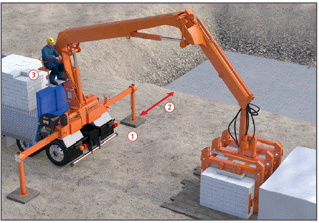
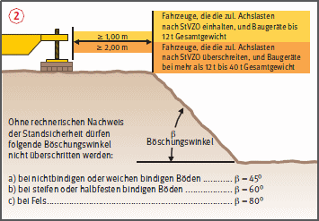
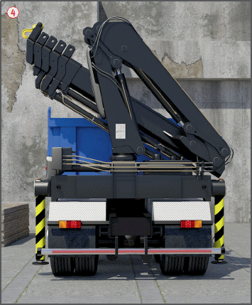

Gefährdungen
- Unzureichende Tragfähigkeit des Untergrundes, mangelhafte Abstützung oder Nichtbeachtung von Sicherheitsabständen an Baugrubenböschungen können zu Kranumstürzen führen.
- Bei hoch gelegenen Steuerständen und auf der LKW-Ladefläche kann es zu Absturzunfällen kommen.
Allgemeines
- Kran nur von besonders unterwiesenen, mindestens 18 Jahre alten, körperlich und geistig geeigneten und vom Unternehmer schriftlich beauftragten Kranführern bedienen lassen.
Schutzmaßnahmen
Aufstellung
- Kran auf tragfähigem Untergrund abstützen. Lastverteilende Unterlagen verwenden
 .
.
- Sicherheitsabstand im Bereich von Baugrubenböschungen und Grabenkanten nach den Vorgaben der DIN 4124 einhalten oder rechnerischen Nachweis der Standsicherheit erbringen
 .
.
- Sicherheitsabstand zu elektrischen Freileitungen beachten. Ggfs. Rücksprache mit zuständigem Energieversorgungsunternehmen durchführen.
Betrieb
- Sichere Steuerstände und Arbeitsplätze auf LKW-Ladeflächen und die dafür vorgesehenen Zugänge benutzen
 .
.
- Funktionsprüfung der Sicherheitseinrichtungen wie z. B.: Abstützüberwachung täglich vor Aufnahme des Kranbetriebs.
- Nur einwandfreie Lastaufnahmeeinrichtungen verwenden. Lasthaken müssen eine funktionsfähige Hakensicherung haben.
- Palettierte Lasten mit Ladegabel befördern.
- Maschinen und Geräte an den vorgesehenen Punkten anschlagen.
- Kleine lose Teile in Körben, Containern usw. befördern und diese nicht über den Rand beladen.
- Gasflaschen in besonderen Transportgestellen transportieren.
- Keine Personenbeförderung.
- Kran und Lastaufnahmeeinrichtungen nicht überlasten. Nur Lasten mit bekanntem Gewicht heben.
- Lastmomentbegrenzung nicht als Waage benutzen.
- Lasten nicht Schrägziehen oder Schleifen.
- Beim Be- und Entladen Lasten nicht über Personen schwenken.
- Beim Aufnehmen bzw. Ablegen von Lasten auf LKW-Ladepritschen müssen Anschläger den Gefahrbereich verlassen (Quetsch-, Absturzgefahr).


Zusätzliche Hinweise zum Fahrbetrieb
- Kranausleger in Transportstellung bringen und festlegen
 .
.
- Zubehörteile sowie Lastaufnahmeeinrichtungen auf dem Fahrzeug festlegen und gegen Herabfallen sichern.
- Handbetätigte Abstützungen gegen Herausrutschen sichern.
Prüfungen
- Art, Umfang und Fristen erforderlicher Prüfungen ermitteln und diese veranlassen, z. B.:
- täglich vor Arbeitsbeginn Funktionsprüfung sämtlicher Notendschalter durch den Kranführer,
- nach Bedarf, mind. 1 x jährlich durch eine "zur Prüfung befähigte Person" (z. B. Sachkundiger),
- Ladekrane mit mehr als 300 kNm Lastmoment oder mit mehr als 15 m Auslegerlänge mindestens alle 4 Betriebsjahre, im 13. Betriebsjahr und danach mindestens jährlich durch einen ermächtigten Sachverständigen.
- Auch Prüfhinweise in Betriebsanleitungen der Hersteller beachten.
- Ergebnisse der Prüfungen dokumentieren und dem Kranprüfbuch beiheften.
07/2021